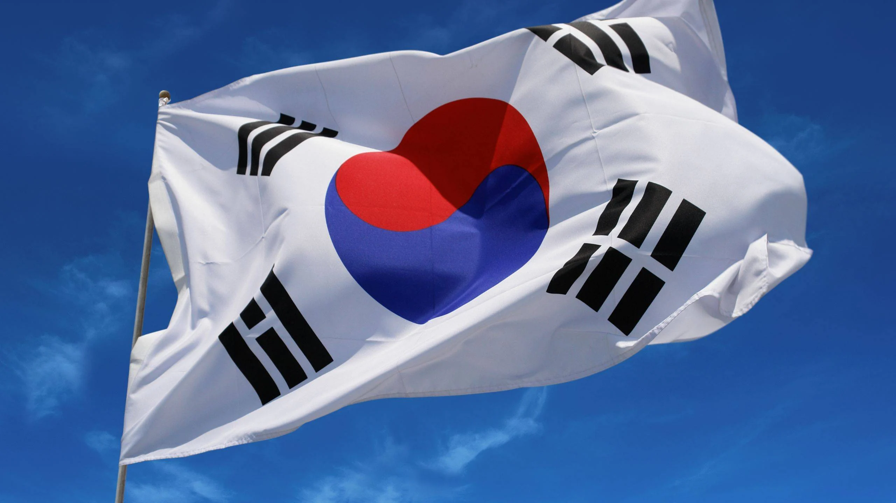

Coreia

A Coreia do Sul, oficialmente República da Coreia, está localizada na metade sul da Península da Coreia, na Ásia Oriental. O país faz fronteira ao norte com a Coreia do Norte e é banhado a leste pelo Mar do Japão, a sul pelo Estreito da Coreia e a oeste pelo Mar Amarelo. Inclui cerca de três mil ilhas, com destaque para Jeju, Ulleungdo e os Rochedos de Liancourt (Dokdo).
Seul, a capital e maior cidade, é uma das áreas metropolitanas mais populosas do mundo. A Coreia do Sul tem uma longa história marcada por invasões e conflitos, incluindo a Guerra da Coreia (1950-1953). Após a fundação da república em 1948 e o fim dos regimes autoritários em 1987, o país se tornou uma democracia multipartidária.
Economicamente, a Coreia do Sul é a 13ª maior economia mundial por PIB PPA e é conhecida por seu rápido crescimento desde a década de 1950. O país é um líder global em tecnologia, com destaque para semicondutores e eletrônicos, e possui uma infraestrutura avançada. A Coreia do Sul também é proeminente na indústria de construção naval, com empresas como a Hyundai Heavy Industries.
Desde o início dos anos 2000, a Coreia do Sul tem sido um fenômeno cultural global, conhecido como Onda Coreana (Hallyu), com forte influência na música (K-pop), dramas de TV e cinema, impulsionada por investimentos governamentais e crescimento cultural.
Curiosidade sobre a Coreia do Sul
A indústria do entretenimento é crucial para a economia da Coreia do Sul, e sua importância pode ser observada em várias áreas:
 |

|

|
1. Crescimento Econômico
A indústria do entretenimento, incluindo K-pop, cinema, séries de TV e jogos, contribui significativamente para o PIB do país. O sucesso global da música e das produções coreanas impulsiona a economia local e gera empregos.
2. Exportação Cultural
A "Hallyu" (onda coreana) promove a cultura sul-coreana no exterior, atraindo turistas e gerando receita através de exportações de conteúdo, como dramas e música. O K-pop, em particular, se tornou um fenômeno global, aumentando o interesse pela cultura e turismo na Coreia.
3. Criação de Empregos
A indústria gera milhares de empregos em diversos setores, desde a produção de conteúdo até marketing, gestão e eventos ao vivo. Isso ajuda a impulsionar o emprego jovem, em um país com uma alta taxa de desemprego juvenil.
4. Turismo
Eventos de entretenimento, como shows e festivais, atraem turistas internacionais, contribuindo para o setor de turismo. As turnês de artistas de K-pop e a popularidade de locais de filmagem de dramas aumentam o fluxo de visitantes.
5. Inovação e Tecnologia
A indústria do entretenimento sul-coreana é conhecida por suas inovações em tecnologia, desde a produção de conteúdo até plataformas de streaming. Isso estimula o desenvolvimento tecnológico no país, com impactos positivos em outras indústrias.
6. Imagem Global
A presença da Coreia do Sul no cenário global de entretenimento ajuda a construir uma imagem positiva do país, promovendo o interesse em outros setores, como negócios e educação.
7. Patrimônio Cultural
A indústria contribui para a preservação e promoção do patrimônio cultural coreano, revitalizando tradições e tornando-as acessíveis a uma audiência global.
8. Empreendedorismo
O crescimento da indústria do entretenimento também impulsiona o empreendedorismo, com novas empresas surgindo em áreas como produção, agenciamento e tecnologia.
Em resumo, a indústria do entretenimento não apenas gera receita direta, mas também tem um efeito multiplicador na economia sul-coreana, influenciando vários setores e promovendo o país globalmente.